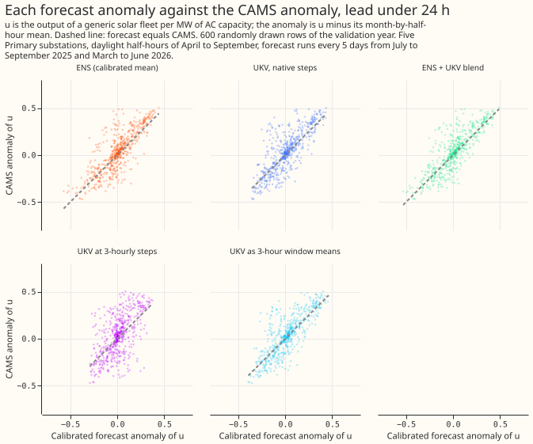
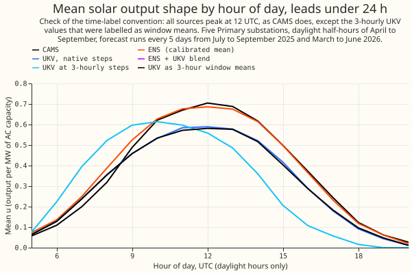

Experiment 53: does the UKV forecast the solar anomaly better than ENS?
We asked whether the Met Office UKV (a 2 km weather model of the United Kingdom that runs to 2 to 5 days ahead) predicts how sunny each half-hour will be better than the European Centre for Medium-Range Weather Forecasts ensemble forecast (ENS) that the forecast uses today. We converted each forecast's sunshine into the output of a generic solar fleet, subtracted that forecast's own monthly average for each half-hour of the day (the "anomaly"), and compared the result with the anomaly of satellite-based sunshine estimates from the Copernicus Atmosphere Monitoring Service (CAMS) at 5 Primary substations, on 72 forecast runs from July 2025 to June 2026. The UKV alone was worse than ENS at every lead time. A mix of ENS and UKV, with weights fitted on the earlier 15 months, had a squared error 4% to 14% lower than ENS within 2 days in a cross-validation on those 15 months. In the validation year its correlation with CAMS was higher than ENS's by only 0.02 to 0.03 within 24 hours, and several of those gains are within the range that chance alone could produce. The mix was no better beyond 54 hours. The one UKV we found with a long matching history is the CEDA archive, which differs from the live UKV and is licensed for non-commercial use, so any gain is an upper bound. This experiment was run post hoc and was not pre-registered, as explained below.
The verdict is small gain for the blend, and no gain for the UKV alone. The blend clears the
1% cross-validation margin of the stage 1 gate in every lead band within 54 hours, and the UKV
alone clears it in none (relative mean squared error +12% to +31% against ENS). The gate therefore
does not stop the experiment as refuted, and the verdict follows the pre-stated all-months gate.
The correlation evidence from the validation year is weaker than the gate: the blend-minus-ENS
interval touches zero at 0 to 6 hours (+0.019, -0.000 to +0.038) and includes zero over 0 to 54
hours (+0.011, -0.006 to +0.027), and at 48 to 54 hours the blend's validation mean squared error
(0.0382) is worse than ENS's (0.0337), although the cross-validation says the blend is 3.8% better
there. As the brief says, the experiment stops at the gate: the demand contrasts were not run, and
the manager decides whether to run them (see "The demand step was not run").
What was fixed beforehand and what was chosen after seeing results. The brief for PVDIS-8b and
the PVDIS-8 plan fixed the three arms (ENS, UKV alone, a fitted blend), the lead bands, the 1%
margin, and the 15-fold month-block cross-validation before any score existed. No prediction was
written down. The ukv3w control and the t54_late variant were added after the first scores were
seen, so they are post hoc, and neither changes the verdict.
All figures are for 5 Primary substations (D9, D10, D11, D14, and D16, anonymised as in experiment 46), daylight half-hours of April to September, valid from July 2025 to June 2026, on 72 forecast runs (one every 5 days). The 1,000 to 4,714 half-hour rows per lead band come from only 6 or 7 calendar months of forecast origin (July to September 2025 and March to June 2026), so every interval below, which resamples those months, understates the true uncertainty.
What was compared, and when each forecast would have been available
Lead is counted from the forecast origin that the production service has, which is the 00 UTC ENS run plus 9 hours, 09:00 UTC. Each arm uses the freshest forecast available at that origin.
- ENS is the daily 00 UTC run, as in experiment 46.
- UKV,
t54is the 06 UTC run of the same day (leads to 54 hours from the run, so to 51 hours from the origin), assuming a run is available 3 hours after its initialisation. - UKV,
t120is the 03 UTC run of the same day, whose T120 files reach 120 hours from the run (114 hours from the origin, since the run starts 6 hours before the origin). - UKV,
t54_lateis the 00 UTC run of the same day, a sensitivity check that assumes the 06 UTC run is not yet available (leads to 45 hours from the origin). - CAMS is the reference: experiment 39's half-hour irradiance for the substation, kept where CAMS reliability is at least 0.9.
The five arms are ENS alone, the UKV alone (native steps), the blend, and two controls
that separate the time resolution of the UKV from its skill. Control ukv3h subsamples the UKV
to ENS's 3-hourly steps and passes the instantaneous values through the production ENS resampler,
labelled as if they were ENS's 3-hour window means, as the maintainer asked. Control ukv3w
first forms 3-hour window means from the UKV (the trapezoid mean of the instantaneous values inside
each window) and then uses the same resampler. The second control was added after the first scores
because the first has a half-window timing error built in: in the hour-of-day figure below, the mean
fleet output u of ukv3h peaks at 10 UTC, while CAMS, ENS, the UKV, and ukv3w all peak at 12
UTC.
The calibration is a slope through the origin of the CAMS anomaly on a forecast's anomaly, fitted
per series and lead band on the training window (valid times to 2025-06-30), leaving out site-band
cells with fewer than 50 fitting rows. The blend regresses the CAMS anomaly on the ENS and UKV
anomalies, with two coefficients and no intercept, and its weights are fitted rather than equal.
Fitted on the whole training window, the ENS weight is 0.57 to 0.83 per series and band and the UKV
weight is 0.17 to 0.46, with no negative weight (t54).
Each source's climatology keeps, for every valid time, the run with the shortest lead. The same
rule applies to ENS, the UKV, and the controls, so they have the same lead mix. Experiment 46
averages its ENS climatology over all leads instead. The two ENS climatologies correlate at 0.998,
and the rebuilt ENS anomaly correlates with experiment 46's calibrated ENS anomaly at 0.986 to 0.989
(t120, t54, t54_late). That difference follows from the lead rule and is not a defect, so the
script requires only a correlation above 0.98.
The cross-validation removes the held-out month from the climatology. The fitted climatology therefore uses the neighbouring months only for a held-out month other than April to June, which has two neighbours inside the window, while the validation scores use the full 15-month climatology. This affects every arm alike.
The latency of the 06 UTC run is assumed, not measured. The t54 arm assumes that the 06 UTC
run is available 3 hours after its initialisation, so just in time for the 09:00 UTC origin, with no
slack. No source for the real delivery time of the live UKV was checked. The t54_late and t120
arms are the cautious readings. The latency at which the blend's gain would disappear was not
measured: even when the 06 UTC run is replaced by the 00 UTC run (a delay of more than 3 hours), the
blend's cross-validated error is still 3.6% to 7.7% lower in every band.
Shortwave conventions and how each was aligned with CAMS
CAMS and ENS are half-hour or window means labelled at the period end, and the UKV and MOGREPS-UK are instantaneous values, so only the UKV and MOGREPS-UK need the interpolation.
| Source | Shortwave convention | Valid-time stamp | Alignment with CAMS |
|---|---|---|---|
| CAMS (experiment 39) | Half-hour mean irradiance | End of the half-hour | None needed |
| ENS | Mean over the native window (3 hours to 144 hours, 6 hours after) | End of the window | The production resampler _upsample_nwp_to_half_hourly shapes each window by the clear-sky index and conserves its energy, giving half-hour means ending at the stamp |
CEDA UKV, shortwave_down |
Instantaneous flux, not a mean | The instant, init time plus step; hourly steps to 48 hours, then 3-hourly | The clear-sky index (flux over the Haurwitz clear-sky flux at the same instant) at each step is interpolated linearly in time to the midpoint of each half-hour, then multiplied by the clear-sky flux at that midpoint |
MOGREPS-UK, shortwave_total |
Instantaneous, as the archive notes (no cell methods or time bounds in the files) | The instant; hourly steps | The same as the UKV |
The same fleet chain then turns each half-hour irradiance into u. A clear-sky index is only formed
where the clear-sky flux is at least 20 W/m2, and a midpoint more than 3 hours from a usable step
takes the nearest step's index, so nothing is interpolated across a night. Beyond 48 hours the
native UKV steps are 3-hourly, so the interpolation there spans 3 hours. The index is capped at
1.5. Each site's UKV value is the cell whose centre is nearest (the largest distance is 1.09 km).
Raw data first
The UKV anomaly follows the CAMS anomaly, with a wider scatter than ENS. The panels show the
calibrated forecast anomaly against the CAMS anomaly at leads under 24 hours. The ukv3h control is
visibly the worst, with a flat top.

All sources peak at 12 UTC, as CAMS does, so no label is shifted, except the ukv3h control,
whose mean u peaks at 10 UTC. The UKV's mean u is 0.875 of CAMS's at leads under 24 hours and
ENS's mean u is 1.023 of CAMS's. A multiplicative bias of the UKV does not affect its anomaly,
which is taken against
its own climatology.

Results by lead band
Correlation with the CAMS anomaly (95% interval from resampling origin months). Bands up to 48 to 54
hours use t54, and the 54 to 120 hour band uses t120. The 48 to 54 hour band of t54 holds
leads of 48 to 51 hours only.
| Lead | Rows | ENS | UKV alone | Blend | ukv3h control |
ukv3w control |
|---|---|---|---|---|---|---|
| 0-6 h | 1,970 | 0.834 (0.777-0.880) | 0.794 (0.754-0.811) | 0.854 (0.806-0.887) | 0.655 (0.577-0.694) | 0.806 (0.763-0.829) |
| 6-12 h | 1,556 | 0.811 (0.730-0.879) | 0.755 (0.702-0.807) | 0.830 (0.758-0.892) | 0.590 (0.457-0.702) | 0.785 (0.724-0.838) |
| 12-24 h | 1,000 | 0.758 (0.686-0.822) | 0.724 (0.619-0.809) | 0.785 (0.719-0.842) | 0.626 (0.510-0.750) | 0.752 (0.660-0.832) |
| 24-48 h | 4,714 | 0.724 (0.682-0.775) | 0.627 (0.544-0.704) | 0.742 (0.703-0.788) | 0.506 (0.396-0.583) | 0.654 (0.578-0.722) |
| 48-54 h | 1,225 | 0.722 (0.581-0.815) | 0.358 (0.009-0.657) | 0.679 (0.479-0.809) | 0.262 (-0.006-0.544) | 0.351 (0.001-0.656) |
| 0-54 h | 10,465 | 0.757 (0.730-0.784) | 0.654 (0.592-0.719) | 0.768 (0.749-0.795) | 0.532 (0.452-0.596) | 0.673 (0.617-0.733) |
| 54-120 h | 10,851 | 0.643 (0.615-0.672) | 0.462 (0.247-0.594) | 0.647 (0.615-0.678) | 0.376 (0.133-0.521) | 0.464 (0.238-0.606) |

The blend's gain is small, and its interval excludes zero in only 2 of the 7 rows. The difference in correlation, blend minus ENS, is +0.019 (-0.000 to +0.038) at 0 to 6 hours, +0.019 (0.012 to 0.028) at 6 to 12 hours, +0.027 (0.002 to 0.055) at 12 to 24 hours, +0.018 (-0.005 to +0.039) at 24 to 48 hours, -0.043 (-0.117 to +0.007) at 48 to 54 hours, +0.011 (-0.006 to +0.027) at 0 to 54 hours, and +0.004 (-0.020 to +0.025) at 54 to 120 hours. The UKV alone minus ENS is negative in every band, from -0.034 (-0.123 to +0.047) at 12 to 24 hours to -0.364 (-0.610 to -0.133) at 48 to 54 hours.
The intervals resample origin months and rest on 6 or 7 blocks, so they understate uncertainty. The blocks are July to September 2025 and March to June 2026. Of the 6 blocks (7 at 54 to 120 hours), the number in which the blend's mean squared error is below ENS's is 5 at 0 to 6 hours, 6 at 6 to 12 hours, 5 at 12 to 24 hours, 4 at 24 to 48 hours, 3 at 48 to 54 hours, 3 over 0 to 54 hours, and 4 of 7 at 54 to 120 hours. The number of blocks with a higher correlation is 5, 6, 5, 5, 3, 3, and 5 of 7 in the same bands.
Time resolution is not what limits the UKV. The ukv3w control, which forms 3-hour window means
from the hourly UKV as ENS delivers its flux, scores 0.019 higher in correlation than the native
steps over 0 to 54 hours (0.011 to 0.027) and has a lower mean squared error by 4.2% (2.3% to 6.2%).
The literal ukv3h control scores 0.122 lower than the native steps over 0 to 54 hours (-0.150 to
-0.093), because the instantaneous values stand in for window means, which moves the peak of its
mean u from 12 UTC to 10 UTC.
The next table gives the calibration slope (ideal 1) and the mean squared error of the calibrated anomaly, on the same rows as the correlations:
| Lead | ENS slope, MSE | UKV slope, MSE | Blend slope, MSE |
|---|---|---|---|
| 0-6 h | 0.95, 0.0251 | 0.98, 0.0288 | 0.94, 0.0221 |
| 6-12 h | 1.00, 0.0074 | 0.92, 0.0091 | 0.96, 0.0066 |
| 12-24 h | 1.19, 0.0079 | 1.12, 0.0087 | 1.17, 0.0072 |
| 24-48 h | 1.02, 0.0203 | 0.89, 0.0258 | 0.99, 0.0192 |
| 48-54 h | 1.00, 0.0337 | 0.54, 0.0636 | 0.93, 0.0382 |
| 54-120 h | 1.07, 0.0233 | 1.05, 0.0311 | 1.05, 0.0230 |
At 48 to 54 hours the blend's mean squared error (0.0382) is worse than ENS's (0.0337) in the validation scores, although it is 3.8% lower in the cross-validation on the training window. The band holds only leads of 48 to 51 hours, from 3 to 6 blocks, so neither figure is reliable.
The stage 1 gate on the training window
The blend clears the 1% margin in every band within 54 hours and the UKV alone in none.
The table gives the cross-validated mean squared error relative to ENS, pooled over the five verdict
series (t54). The last column restricts the same cross-validation to the folds of local months
April to September,
the months the validation year scores. The verdict follows the all-months column, as the decision
rule states.
| Lead | ENS (mean squared error) | UKV alone | Blend | ukv3w control |
Blend, April to September folds only |
|---|---|---|---|---|---|
| 0-6 h | 0.0257 | +13.8% | -13.8% | +7.7% | -14.1% |
| 6-12 h | 0.0083 | +12.5% | -11.5% | +3.8% | -11.9% |
| 12-24 h | 0.0078 | +12.3% | -5.6% | +9.8% | -5.0% |
| 24-48 h | 0.0198 | +30.5% | -5.4% | +23.1% | -5.8% |
| 48-54 h | 0.0365 | +20.8% | -3.8% | +22.2% | -2.1% |
| 0-54 h pooled | 0.0208 | +22.3% | -7.6% | +17.4% | -7.4% |
The April to September column shows the same gain as the all-months column (-7.4% against -7.6% pooled), and the UKV alone is worse by 22.8% in those months, so the winter months do not drive the result.
For t120 the blend is 3.4% lower pooled over 0 to 120 hours and 1.1% lower at 54 to 120 hours,
just over the 1% margin, while the validation correlation gain at 54 to 120 hours is +0.004 (-0.020
to +0.025). If the 06 UTC run were not available at the origin (t54_late), the UKV alone is worse
by 18.2% to 41.5% in the bands to 48 hours, and the blend is still lower by 3.6% to 7.7% in every
band.
The check on MOGREPS-UK
MOGREPS-UK, the live ensemble of the Met Office, is no better than ENS on 14 days of overlap with CAMS. Its point estimates are above ENS's in some bands, but an equal-weight blend is not distinguishable from ENS. MOGREPS-UK has 3 members and about 7 weeks of archive (27 August to 16 October 2026), so nothing was calibrated or fitted. The blend here averages the two anomalies with equal weight. The check starts after the holdout date of 2026-07-01, so it uses holdout-period data that no calibration touched, outside the validation year. MOGREPS-UK is anomalised against the CAMS climatology of experiment 46, while ENS is anomalised against ENS's own climatology, so MOGREPS-UK's bias is not removed. The mean squared error of MOGREPS-UK is therefore unfavourable, and its correlation is not affected. CAMS ends on 11 September 2026, so the reference covers only 14 forecast origin days (27 August to 10 September). Correlation with the CAMS anomaly, 95% interval from resampling whole origin days:
| Lead | Rows | ENS | MOGREPS-UK | Equal-weight blend |
|---|---|---|---|---|
| 0-6 h | 770 | 0.761 (0.572-0.866) | 0.654 (0.426-0.795) | 0.768 (0.551-0.864) |
| 6-12 h | 490 | 0.582 (0.135-0.813) | 0.645 (0.384-0.813) | 0.656 (0.359-0.837) |
| 12-24 h | 291 | 0.787 (0.562-0.885) | 0.795 (0.598-0.882) | 0.832 (0.611-0.915) |
| 24-48 h | 1,501 | 0.690 (0.502-0.795) | 0.438 (0.204-0.631) | 0.637 (0.421-0.764) |
| 48-54 h | 720 | 0.414 (-0.089-0.791) | 0.418 (0.139-0.578) | 0.481 (0.104-0.723) |
| 54-120 h | 3,063 | 0.393 (0.178-0.593) | 0.310 (0.176-0.447) | 0.394 (0.217-0.565) |
| 0-24 h | 1,551 | 0.741 (0.584-0.847) | 0.627 (0.416-0.771) | 0.742 (0.538-0.845) |
At 6 to 12 hours, 12 to 24 hours, and 48 to 54 hours, the point estimates of MOGREPS-UK and of the
blend are above ENS's, but every interval overlaps ENS's widely, on 12 to 14 days. Over all 49
origin days from 27 August 2026, the MOGREPS-UK anomaly correlates with the ENS anomaly at 0.768
within 24 hours, 0.699 at 24 to 54 hours, and 0.545 at 54 to 120 hours. That correlation between the
two anomalies is not a skill score, because neither anomaly is the reference. MOGREPS-UK's mean u
is 0.303 against ENS's
0.373 and CAMS's 0.378 on those rows.
The demand step was not run
Experiment 46's contrasts C3 and C6 (the demand forecast with the solar term, at 0 to 48 hours) were not run with the blend. The blend's gain is a ceiling from a product that is not the live one (the CEDA UKV) and whose licence is non-commercial. The interval of the blend's gain over ENS across 0 to 54 hours includes zero (+0.011, -0.006 to +0.027). The scores here predict a change in the demand contrast of the order of a 0.02 gain in correlation, which experiment 46's intervals (half-widths of 0.13 to 0.32 points of capacity at 0 to 48 hours) could not resolve. A non-live product with a licence that forbids production is a weak case for the spend, so the manager decides whether to run the contrasts.
What these data could not show
- The live UKV is not the CEDA UKV. The CEDA archive differs statistically from the live feed, the CEDA licence is non-commercial, and the live product has no history at the Primaries, so the blend's gain is a ceiling.
- The delivery delay of the 06 UTC run is assumed. See "What was compared" above: it was not
measured, and the blend's gain survived the
t54_latereading, so no latency at which it disappears was found. - The demand-forecast effect is untested. A 0.02 gain in correlation of the anomaly need not carry through experiment 46's solar term, whose coefficient the residual fitted below 1.
- The 48 to 54 hour band is thin. It holds 1,225 rows from leads of 48 to 51 hours and its intervals are wide.
- Calibration and the blend use 15 months. Each source's climatology is fitted on the same 15 months, with neighbouring local months pooled as in experiment 46.
What the next experiment should answer
The manager decides whether to run experiment 46's C3 and C6 contrasts at 0 to 48 hours with the blend's anomaly. See "The demand step was not run" for why the case is weak.